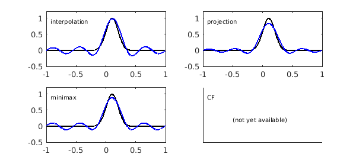

1. Introduction
This example is a work in progress, not yet complete.
Our aim is to give a broad view of some practical methods of approximation of functions on an interval and of Chebfun's capabilities in these areas, not all of which are developed yet. As time goes by, this Example will probably evolve with new capabilities being described and new references given.
In a word, the "eight shades" come about as follows. We will discuss four types of approximation for nonperiodic functions (Chebyshev), and then their analogues for periodic functions (trigonometric). Actually, each "four" is really a "four-and-a-half", since there is a least-squares option that inhabits the spectrum between the two extremes of interpolation (minimal number of data points) and projection (infinitely many data points).
And if you like it's not just eight or ten shades but sixteen or twenty! -- because for clarity, we begin by describing the better-known and better-developed polynomial special cases, i.e., type $(m,n)$ rational approximations with $n=0$.
2. Polynomial approximation
If $f$ is a continuous function on $[-1,1]$, four interesting methods of approximation of $f$ by a degree $m$ polynomial are as follows. These approximants can all be computed in Chebfun, and the mathematics is presented in Approximation Theory and Approximation Practice (ATAP) [1].
P1. Chebyshev interpolation (chebfun with m+1 specified, ATAP chap 4)
P2. Chebyshev projection (chebfun with 'trunc' option, ATAP chap 4)
P3. Minimax approximation (remez, ATAP chap 10)
P4. CF approximation (cf, ATAP chap 20)
For example, here are degree 8 approximations of these kinds to $f(x) = \exp(-50(x-0.1)^2)$.
f = chebfun(@(x) exp(-50*(x-.1).^2),'trig'); m = 8; FS = 'FontSize'; p1 = chebfun(f,m+1); subplot(2,2,1), yl = [-.5 1.2]; plot(f,'k',p1,'r'), ylim(yl), text(-.93,.9,'interpolation',FS,10) p2 = chebfun(f,'trunc',m+1); subplot(2,2,2) plot(f,'k',p2,'r'), ylim(yl), text(-.93,.9,'projection',FS,10) p3 = remez(f,m); subplot(2,2,3) plot(f,'k',p3,'r'), ylim(yl), text(-.93,.9,'minimax',FS,10) p4 = cf(f,m); subplot(2,2,4) plot(f,'k',p4,'r'), ylim(yl), text(-.93,.9,'CF',FS,10)
These curves show some properties that are typical of such approximations. One is that the differences between them are not very great. Another (for smooth functions $f$, at least) is that the minimax and CF approximations, though mathematically distinct, are for practical purposes indisinguishable. We can quantify this effect for the present example by measuring the maximal difference between the two:
CFerror = norm(p3-p4,inf)
CFerror =
1.140034870100448e-04
Methods P1 and P2 represent two ends of a spectrum. In between, there is a method we could label P1.5:
P1.5. Chebyshev least-squares (ratinterp, ATAP chap 26)
The idea here is to determine a polynomial $p$ of the specified degree $m$ that is the least-squares approximation to $f$ on the $K$-point Chebyshev grid, where $K$ satisfies $m+1 \le K < \infty$. For $K=m+1$, this is the same as Chebyshev interpolation, and in the limit $K \to \infty$ the discrete least-squares problem becoming a continuous least-squares problem with the Chebyshev weight, i.e., Chebyshev projection. Chebfun has no special code for computing Chebyshev least-squares approximation polynomials; the code ratinterp and the ATAP chapter cited above both apply more generally to the rational case.
3. Trigonometric polynomial approximation
The four methods of polynomial approximation have trigonometric analogues for periodic functions. Our favorite starting reference on this material is [2]. At present, Chebfun has a trigremez command for trigonometric minimax approximation, but not yet a trigcf command. A triginterp command for the least-squares case is under development but not yet in the development or master branches of Chebfun.
TP1. Trigonometric interpolation (chebfun with 'trig' specified, [2])
TP2. Trigonometric projection (chebfun with 'trunc' and 'trig', [2])
TP3. Minimax trigonometric approximation (trigremez)
TP4. Fourier-CF approximation (trigcf, not yet available)
Again, TP1 and TP2 represent two ends of a spectrum:
TP1.5. Trigonometric least-squares (triginterp, in a branch)
clf t1 = chebfun(f,m+1,'trig'); subplot(2,2,1) plot(f,'k',t1,'b'), ylim(yl), text(-.93,.9,'interpolation',FS,10) t2 = chebfun(f,'trunc',m+1,'trig'); subplot(2,2,2) plot(f,'k',t2,'b'), ylim(yl), text(-.93,.9,'projection',FS,10) t3 = trigremez(f,m/2); subplot(2,2,3) plot(f,'k',t3,'b'), ylim(yl), text(-.93,.9,'minimax',FS,10) subplot(2,2,4) text(-.93,.9,'CF',FS,10) text(-.5,.2,'(not yet available)',FS,10), axis([-1 1 yl]) set(gca,'xtick',[],'ytick',[])
Warning: Remez algorithm did not converge after 100 iterations to the tolerance 1.1e-10.

4. Rational approximation
Discussion to be added here.
R1. Rational interpolation (ratinterp, chap 27 of ATAP)
R2. Chebyshev-Pade approximation (chebpade)
R3. Minimax rational approximation (remez, chap 24 of ATAP)
R4. CF rational approximation (cf, chap 20 of ATAP)
and
R1.5. Rational least-squares (ratinterp, chap 27 of ATAP)
clf m = 3; n = 3; [p,q] = ratinterp(f,m,n); r1 = p./q; subplot(2,2,1), yl = [-.5 1.2]; plot(f,'k',r1,'r'), ylim(yl), text(-.93,.9,'interpolation',FS,10) [p,q] = chebpade(f,m,n); r2 = p./q; subplot(2,2,2) plot(f,'k',r2,'r'), ylim(yl), text(-.93,.9,'projection',FS,10) [p,q] = remez(f,m,n); r3 = p./q; subplot(2,2,3) plot(f,'k',r3,'r'), ylim(yl), text(-.93,.9,'minimax',FS,10) [p,q] = cf(f,m,n); r4 = p./q; subplot(2,2,4) plot(f,'k',r4,'r'), ylim(yl), text(-.93,.9,'CF',FS,10)
Warning: Remez algorithm did not converge after 20 iterations to the tolerance 4.6e-15.
5. Trigonometric rational approximation
Discussion to be added here.
TR1. Trigonometric rational interpolation (triginterp, in a branch)
TR2. Fourier-Pade approximation (trigpade, in a branch)
TR3. Minimax trigonometric rational approx (trigremez, not yet available)
TR4. Fourier-CF rational approximation (trigcf, not yet available)
and
TR1.5. Trigonometric rational least-squares (triginterp, in a branch)
clf subplot(2,2,1) text(-.93,.9,'interpolation',FS,10) text(-.5,.2,'(not yet available)',FS,10), axis([-1 1 yl]) set(gca,'xtick',[],'ytick',[]) subplot(2,2,2) text(-.93,.9,'projection',FS,10) text(-.5,.2,'(not yet available)',FS,10), axis([-1 1 yl]) set(gca,'xtick',[],'ytick',[]) subplot(2,2,3) text(-.93,.9,'minimax',FS,10) text(-.5,.2,'(not yet available)',FS,10), axis([-1 1 yl]) set(gca,'xtick',[],'ytick',[]) subplot(2,2,4) text(-.93,.9,'CF',FS,10) text(-.5,.2,'(not yet available)',FS,10), axis([-1 1 yl]) set(gca,'xtick',[],'ytick',[])
6. References
[1] L. N. Trefethen, Approximation Theory and Approximation Practice, SIAM, 2013.
[2] G. B. Wright, M. Javed, H. Montanelli and L. N. Trefethen, Extension of Chebfun to periodic functions, SIAM J. Sci. Comp., 2016.